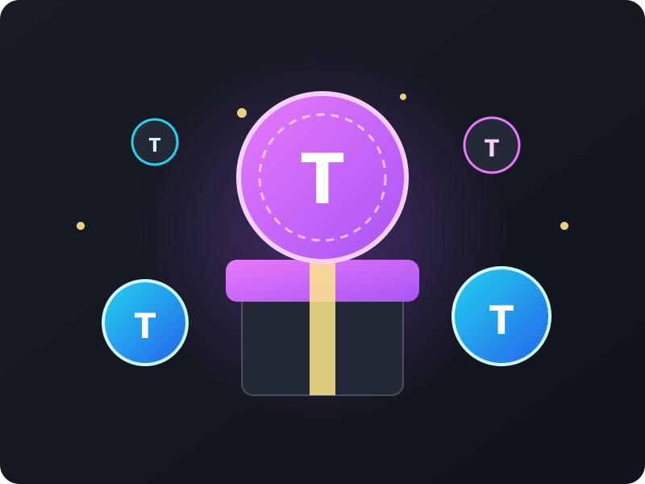
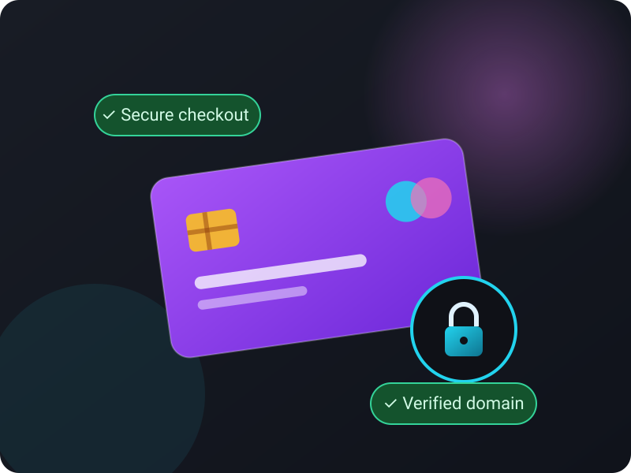
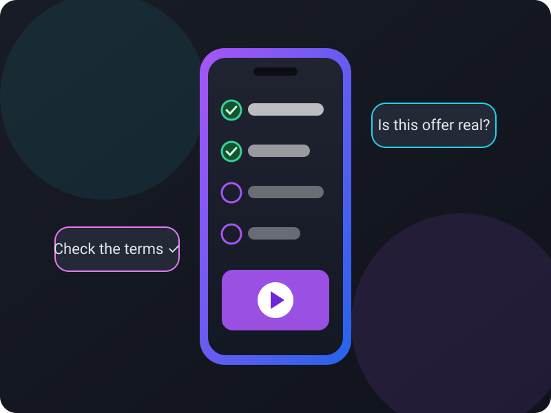
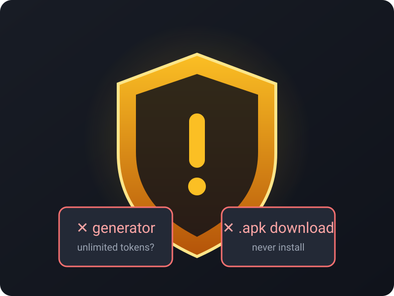

What Are Stripchat Tokens?
Stripchat tokens are the platform's on-site currency. Viewers use them to support creators — for example through tips, paid interactions, or other features the platform makes available. If you are new to the site, it helps to first understand how Stripchat tokens work before you spend any money or join any promotion.
Tokens are normally purchased through the platform's own checkout, where you can see the current packages, prices, and payment options. We deliberately do not list prices here, because pricing, fees, and available bundles can change. For the latest information, check the current official terms and the relevant checkout page directly on the platform.
One more thing worth knowing: tokens generally hold value only inside the platform. They are not a cryptocurrency, not an investment, and not something you can reliably resell. Anyone offering to sell you tokens privately — especially over chat or social media — is almost certainly running a scam. Keep that in mind as we walk through the best Stripchat token methods that stay on the right side of the rules.


Can You Get Stripchat Tokens Without a Hack?
Yes — there are legal ways to get Stripchat tokens that have nothing to do with hacking. The confusion comes from search results mixing genuine promotions with scam sites. So let's draw a clear line between what is legitimate and what is not.
Legal promotions are offers published with clear terms: who is eligible, what you get, when the offer runs, and what — if anything — you need to do. Verified partner offers work the same way, except a third-party page presents the deal; the key word is verified, meaning you can check the company's identity, contact details, and terms. Rewards or referral programs, when officially available, let users earn credit by following published program rules. Discount campaigns reduce the cost of token packages for a limited time. And contests with published rules spell out entry requirements and winner selection in advance.
On the other side sit unauthorized generators and scams: sites promising unlimited tokens, tools asking for your password, downloads that install malware, and "verification" surveys that harvest your data. These are never legitimate. If you are wondering are free Stripchat tokens real, the honest answer is: genuine free-token opportunities are rare, limited, and always documented — anything else is bait.
In short, learning how to get Stripchat tokens without a hack mostly means learning how to tell the first group from the second. The rest of this guide shows you exactly how.
The Best Legal Ways to Get Stripchat Tokens in 2026 and 2027
Below are the safe Stripchat token methods we recommend reviewing. None of them is guaranteed to be available at any given moment — Stripchat token promotion 2026 and Stripchat token promotion 2027 campaigns come and go — so treat this as a checklist to work through rather than a promise of results.
Check Official Promotions and Published Offers
The most reliable starting point for how to get Stripchat tokens legally is the platform itself. Official announcements, on-site banners, and help pages are where genuine legitimate Stripchat token promotions appear first. When you find one, verify the details like a detective: the exact start and end dates, who is eligible, any regional limitations, what actions are required, and the full terms and conditions. Screenshot or save the terms so you have a record. If an offer is described only in a chat message or a random social post with no link to published terms, treat it as unverified and move on.
Look for Transparent Partner Promotions
Partner pages may offer Stripchat token offers, Stripchat token bonus offers, or Stripchat token discounts — but quality varies enormously. Before trusting any partner promotion, confirm that the page provides:
- Clear, readable terms and conditions
- Real contact information (not just an anonymous form)
- No request for your account password — ever
- No demand to install browser extensions or downloads
- No promise of unlimited tokens
- No hidden payment or subscription conditions
- A clear affiliate or promotional disclosure
If several of these are missing, that is your answer: walk away. A trustworthy partner wants you to read the terms; a scammer hopes you won't.
Review Legitimate Giveaways and Draws
Wondering how to participate in a token giveaway legally? Start with the Stripchat token giveaway rules. Every genuine draw should clearly state its start and end dates, eligibility requirements, entry steps, prize description, winner-selection process, geographic restrictions, whether any purchase is required, and complete terms and conditions. Be skeptical of giveaways announced only through direct messages, comments sections, or accounts with no history. And remember the golden rule of free Stripchat tokens legal methods: a real giveaway never asks for your password, recovery codes, or payment details to "verify" your entry.
Use Only Secure and Authorized Payment Methods
This Stripchat token purchase guide would be incomplete without payment safety basics for secure online token payments. When you decide how to buy Stripchat tokens safely, stick to the official checkout or a clearly disclosed authorized partner, check the domain character by character before paying, and never send payment details through chat or email. Never reuse passwords across sites, never share account recovery codes with anyone, and keep your receipts. Avoid unknown sellers and suspicious payment requests entirely — if someone pressures you to pay quickly or outside the normal checkout, it is not worth the risk.


Watch for Seasonal Promotions
Like many platforms, adult webcam services tend to concentrate Stripchat token rewards and Stripchat token promo codes around holidays and special events. Seasonal campaigns may offer discounted bundles or limited extras — but each one must be verified individually. Old promo codes circulate for years after expiring, so do Stripchat promo codes really work? Sometimes, but only within their published validity window. Check the date on any code list, confirm the terms on an official or clearly disclosed partner page, and never pay anyone for a "guaranteed working code."
Want a quick, safe starting point?
Review the transparent partner promotions below, read each site's terms, and use the safety checklist before you enter anything. No hacks, no generators — just careful verification.
Websites to Review for Legal Token Promotions
The following third-party pages describe their own token-related promotions. We list them neutrally as Stripchat token alternatives worth reviewing — not as endorsed or approved partners. We have not independently verified any official relationship with the platform, and inclusion here is not an endorsement. Each link is promotional, so always verify the promotion on the destination site before participating.
A third-party promotional page describing token offers. Check the current terms, eligibility, and availability directly on the site — details may change at any time.
Check the Current OfferExternal promotional website. Review its terms before participating.
A third-party promotional page describing token offers. Confirm dates, geographic eligibility, and entry requirements on the site itself before taking any action.
Check the Current OfferExternal promotional website. Review its terms before participating.
A third-party promotional page describing a token offer. Read the full terms and eligibility rules on the destination website — nothing here guarantees free tokens.
Check the Current OfferExternal promotional website. Review its terms before participating.
How to Identify a Stripchat Token Scam
Scam sites follow predictable patterns. Learning to recognize fake Stripchat token websites is the single most valuable skill on this page — it protects both your money and your account. Run from any offer that shows one or more of these signs:
- Unlimited free token promises — no real system works this way
- "Token generators" or balance adders of any kind
- Requests for your account password or recovery codes
- Requests for payment details outside a secure checkout
- Forced browser extensions you must install to continue
- APK files or executable downloads
- Fake "human verification" surveys that harvest data
- Fake countdown timers manufacturing urgency
- Fake social proof: invented winners, reviews, or live notifications
- Requests to disable browser security or antivirus warnings
- Phishing domains with misspelled or lookalike names
- Any promise that clearly violates platform rules
To avoid fake Stripchat token generators, remember the economics: tokens cost the platform money, so nobody gives away unlimited amounts through a random web form. If you are asking what to do if a website promises unlimited Stripchat tokens, the answer is simple — close the tab. You can also help others by reporting the page; see our Report a Suspicious Offer page for options.
What You Should Never Do
Some lines should never be crossed, no matter how convincing a site looks. These actions can get your account banned, expose you to fraud charges, or hand criminals the keys to your digital life:
- Never use hacks, cheats, or exploits of any kind
- Never use bots or unauthorized automation
- Never use stolen cards or anyone else's payment method
- Never attempt chargeback abuse or refund fraud
- Never buy tokens from unknown sellers or via direct message deals
- Never share your login credentials with any third party
- Never download suspicious software or "token tools"
- Never bypass platform security or access controls
- Never install unknown browser extensions for a promotion
A Simple 5-Minute Safety Checklist
Before you trust any legal adult webcam token promotions, spend five minutes on this routine. It covers how to verify a token promotion before using it and how to get Stripchat tokens without risking your account:
- Check the exact domain. Look for misspellings, extra words, and odd extensions. Bookmark the real pages you use.
- Read the terms. Find the Stripchat token terms and conditions or the partner's own terms. No terms, no participation.
- Confirm dates and eligibility. Verify the offer is current and open in your country — availability may vary.
- Avoid requests for passwords or sensitive information. Legitimate offers never need your login or recovery codes.
- Use secure payment methods. Pay only through the official checkout or a clearly disclosed authorized partner.
- Keep a record. Save receipts, confirmation emails, screenshots of terms, and entry confirmations.
- Leave if it sounds too good to be true. Unlimited tokens, guaranteed wins, and secret exploits are always fiction.